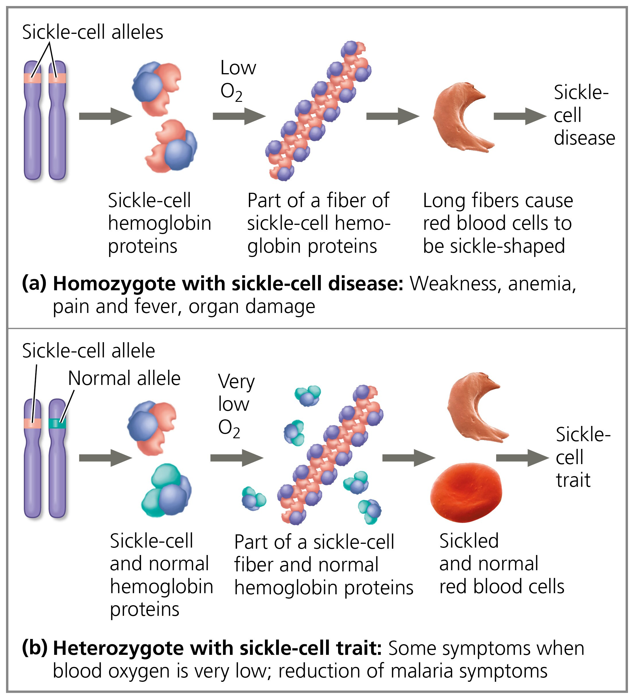
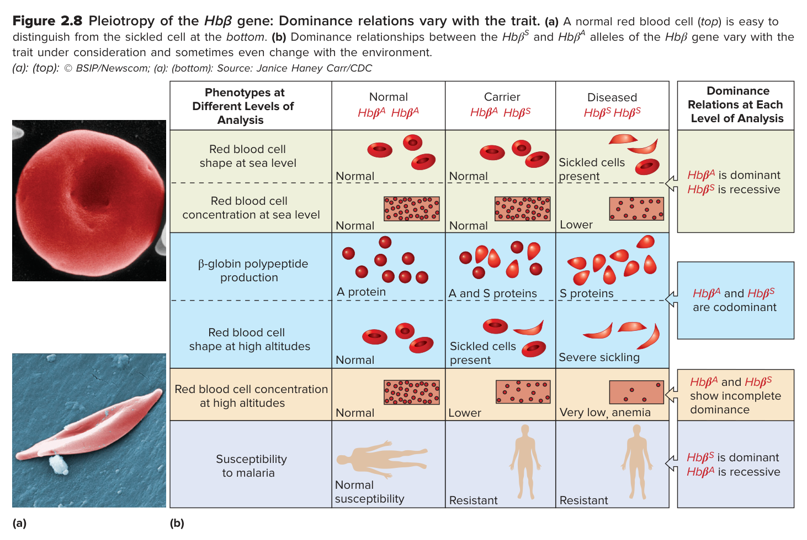

Campbell 13e 原文直斷： "Thus, at the organismal level, the normal allele is incompletely dominant to the sickle-cell allele (Figure 14.17)." 異型合子帶有一個突變基因即會影響表現型，在長期缺氧、高山或運動下會出現症狀，表徵介於正常與重症之間。
②
細胞層次 (Cellular)
等顯性（共顯性） (Codominance) *若看整體鐮刀化程度比例亦可判不完全顯性
直接對應 Campbell 13e 圖 14.17(b)： 圖示標明 "Sickled and normal red blood cells"。題幹寫明「有部分形成鐮刀型，有部分維持正常狀態」，兩種細胞型態在血液中同時完整並存，此即等顯性之特徵。
③
血紅素表現層次 (Molecular)
等顯性（共顯性） (Codominant)
Campbell 13e 原文直斷： "At the molecular level, the two alleles are codominant; both normal and abnormal (sickle-cell) hemoglobins are made in heterozygotes." 異型合子同時合成兩種蛋白質分子。
🧭 中間型遺傳（不完全顯性）的 4 大核心判準與判定決策樹
要精準判斷題目在哪個層次屬於「中間型遺傳（不完全顯性）」，必須回到遺傳學第一原理。經典遺傳學（Pierce 7e / Griffiths 12e / Brooker 8e）定義中間型遺傳有 4 大核心判定要點：
③ 分子層次（血紅素合成）： 體內沒有任何「半正常半異常的中間雜種蛋白」，而是正常 HbA 蛋白與異常 HbS 蛋白各自完整合成 → 完全否定中間型，毫無爭議為等顯性（共顯性）。
📖 Campbell Biology 13e (Chapter 14) 原文逐段考證
Campbell Biology 13e 在第 14 章〈孟德爾與基因概念〉（Mendel and the Gene Idea）的「鐮形血球疾病：具有演化意涵的遺傳疾病」專題中，白紙黑字寫下了對顯隱性層次的定性：
Campbell Biology 13e · Chapter 14 · p. 288 原文
"Although two sickle-cell alleles are necessary for an individual to have sickle-cell disease and thus the condition is considered recessive, the presence of one sickle-cell allele can affect the phenotype. Thus, at the organismal level, the normal allele is incompletely dominant to the sickle-cell allele (Figure 14.17).
At the molecular level, the two alleles are codominant; both normal and abnormal (sickle-cell) hemoglobins are made in heterozygotes (carriers), who are said to have sickle-cell trait. (Here the word 'trait' is used to distinguish this condition from sickle-cell disease, not as it was defined earlier—as any variant of a character.) Heterozygotes are usually healthy but may suffer some symptoms during long periods of reduced blood oxygen."
雖然個體需要同時擁有兩個鐮刀型等位基因才會患有鐮形血球疾病（sickle-cell disease），因此該疾病通常被視為隱性（recessive），但只要單一鐮刀型等位基因的存在，就能影響表現型。
因此，在個體層次（at the organismal level），正常等位基因對鐮刀型等位基因呈不完全顯性（incompletely dominant，圖 14.17）。
在分子層次（at the molecular level），這兩個等位基因呈共顯性／等顯性（codominant）；異型合子（帶因者，稱為具有鐮形血球性狀 sickle-cell trait）體內同時產生正常與異常（鐮刀型）血紅素。（此處使用「性狀 trait」一詞是為了區分這種攜帶狀態與鐮形血球疾病，而非先前定義的「性狀之任一變異」。）異型合子平時通常健康，但在長期血氧不足時可能出現一些症狀。
🔬 Campbell 13e 圖 14.17：細胞與血紅素表現型模型

▲ Campbell Biology 13e Figure 14.17: Sickle-cell disease and sickle-cell trait
Campbell 13e 圖 14.17 以兩側對比清楚呈現了兩者的生理機制：
(a) 鐮形血球疾病同型合子（Homozygote for sickle-cell disease）
染色體：兩條同源染色體均攜帶鐮刀型等位基因。
分子層次：細胞內合成的所有血紅素均為異常的鐮刀型血紅素。
纖維聚合：在低血氧時，異常血紅素聚集成堅硬的長桿狀螺旋纖維。
細胞層次：紅血球被撐開變形為僵硬的典型鐮刀形（Sickled red blood cells）。
個體層次：鐮刀形細胞阻塞微血管，引發嚴重溶血性貧血、疼痛發燒、組織壞死與器官損傷。
(b) 鐮形血球性狀異型合子（Heterozygote with sickle-cell trait）——即題幹 SS'
染色體：一條攜帶正常等位基因（S），另一條攜帶鐮刀型等位基因（S'）。
分子層次：體內同時合成正常血紅素與鐮刀型血紅素（共顯性/等顯性）。
纖維聚合：由於存在大量正常血紅素的空間阻礙，只有在血氧極度低下時，鐮刀型血紅素才會聚集形成長纖維。
細胞層次：在低氧環境下，血液中「同時有鐮刀形紅血球和正常紅血球（Sickled and normal red blood cells）」（對應題幹 ②）。
圖 14.17(b) 呈現等顯性直觀： 正常細胞與鐮刀細胞同時在同一血液中並存（Sickled and normal cells）
不完全顯性（Incomplete dominance）： "In regard to blood-cell shape, however, there is incomplete dominance, as shown by the fact that many of the cells have a slight sickle shape."（看整體鐮刀化程度中間值）
分子層次
共顯性 / 等顯性（Codominant） 正常血紅素與突變血紅素同時被合成製造
共顯性 / 等顯性（Codominance）： 兩者蛋白質產物皆被合成，經電泳分離出兩條獨立色帶
👑 Goldberg《Genetics: From Genes to Genomes》7e：五大性狀顯隱性矩陣（圖 2.8）
諾貝爾獎得主 Leland Hartwell 與 Michael Goldberg 所合著的遺傳學經典《Genetics: From Genes to Genomes》7e (2021) Chapter 2（第 38–40 頁），對鐮刀型貧血做出了全世界教材中最嚴謹、最精細的性狀拆解。Goldberg 明確指出：「顯隱性不是等位基因的孤立本質，而是取決於特定的等位基因組合，以及檢視表現型時所採用的生理層次與環境。」

▲ Goldberg Genetics 7e Figure 2.8: Pleiotropy of the Hbβ gene — Dominance relations vary with the trait.
Goldberg Genetics 7e · Chapter 2 · p. 39 原文
"At the molecular level—the production of β-globin proteins—both forms of β-globin are present in heterozygotes, so Hbβᴬ and Hbβˢ are codominant.
At the cellular level, in their effect on red blood cell shape, the Hbβᴬ and Hbβˢ alleles show either complete dominance or codominance depending on altitude. Under normal oxygen conditions, the great majority of a heterozygote’s red blood cells have the normal biconcave shape (Hbβᴬ is dominant to Hbβˢ). When oxygen levels drop, however, sickling occurs in some Hbβᴬ Hbβˢ cells (Hbβᴬ and Hbβˢ are codominant).
Considering the trait of resistance to malaria, the Hbβˢ allele is dominant to the Hbβᴬ allele... But luckily for the heterozygote, Hbβˢ is recessive to Hbβᴬ for anemia or death."